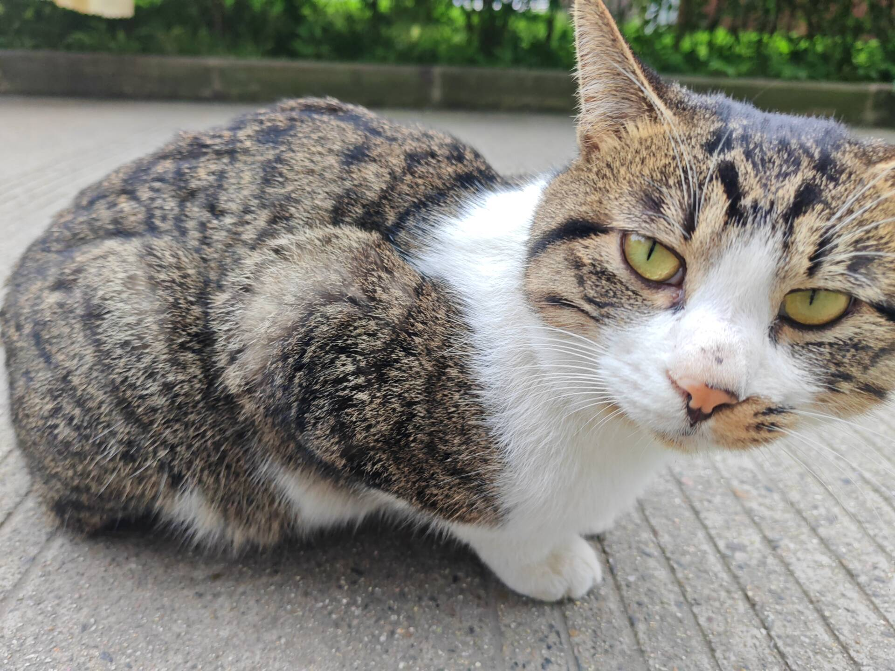

小橘
橘猫
3岁
健康
已领养
性格特点
小橘是一只非常友善温顺的橘猫，性格开朗活泼，非常喜欢与人互动。它总是能敏锐地感知到人类的情绪，并给予适当的安慰和陪伴。
性格优点
- • 性格温顺，不攻击人
- • 非常亲人，喜欢被抚摸
- • 聪明伶俐，容易训练
- • 适应能力强
行为特点
- • 喜欢在阳光下睡觉
- • 对陌生人比较警惕
- • 喜欢玩逗猫棒和毛线球
- • 爱干净，经常梳理毛发
健康状况
体检结果
体重：
4.2kg
疫苗接种：
已完成
绝育手术：
已完成
驱虫记录：
定期进行
医疗建议
- • 定期复查保持健康
- • 控制饮食避免肥胖
- • 提供充足的运动空间
- • 保持环境清洁卫生
互动指数
亲人程度
95%
活泼度
85%
训练性
80%
适应能力
90%
日常活动
喜欢在阳光下睡觉
爱玩逗猫棒和毛线球
定时用餐，食欲很好
爱干净，经常舔毛
领养状态
已找到温暖的家
小橘现在已经有了爱它的主人，在新家里生活得非常幸福！
领养时间：2024年1月15日
领养人：李同学
领养人：李同学
成长故事
小橘是2021年春天来到校园的，当时它还是一只瘦弱的小奶猫，孤零零地躲在女生宿舍楼下的花坛里。有爱心同学发现了它，给它带来了食物和水。随着时间的推移，小橘逐渐变得健康活泼，也越来越亲人。
在校园里生活期间，小橘深受同学们喜爱。每当有人经过，它都会友好地打招呼，用圆润的身姿和软糯的叫声吸引人们的注意。2023年秋天，一位即将毕业的大四同学决定领养它，给它一个永远的家。
现在，小橘在新家里生活得非常好。它的主人说，小橘很快适应了新环境，现在是家里最受欢迎的小成员之一。每当有朋友来访，小橘总是热情地迎接大家，展现出它天生的社交能力。